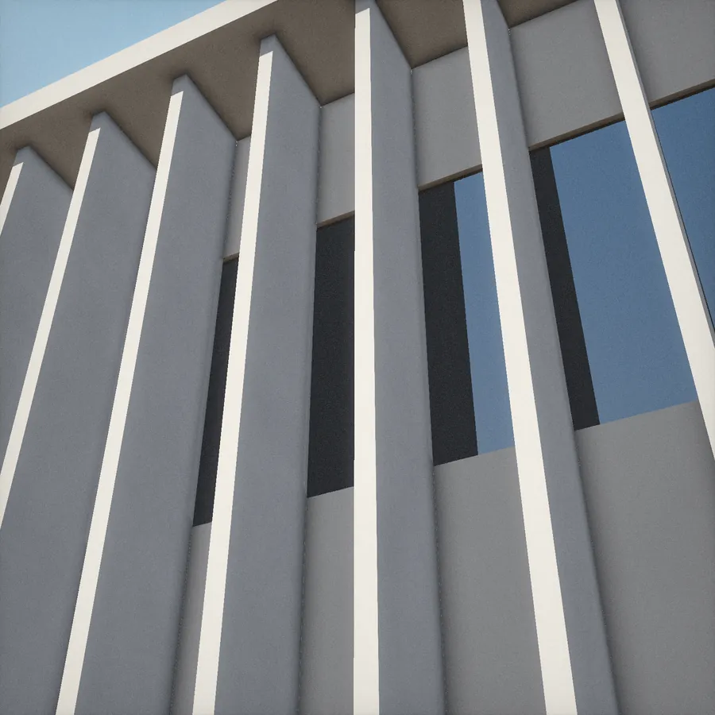
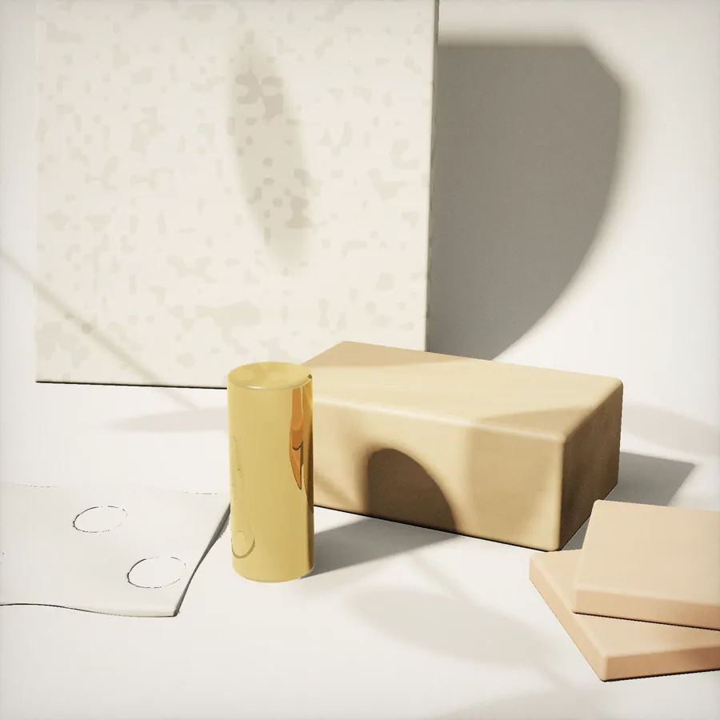
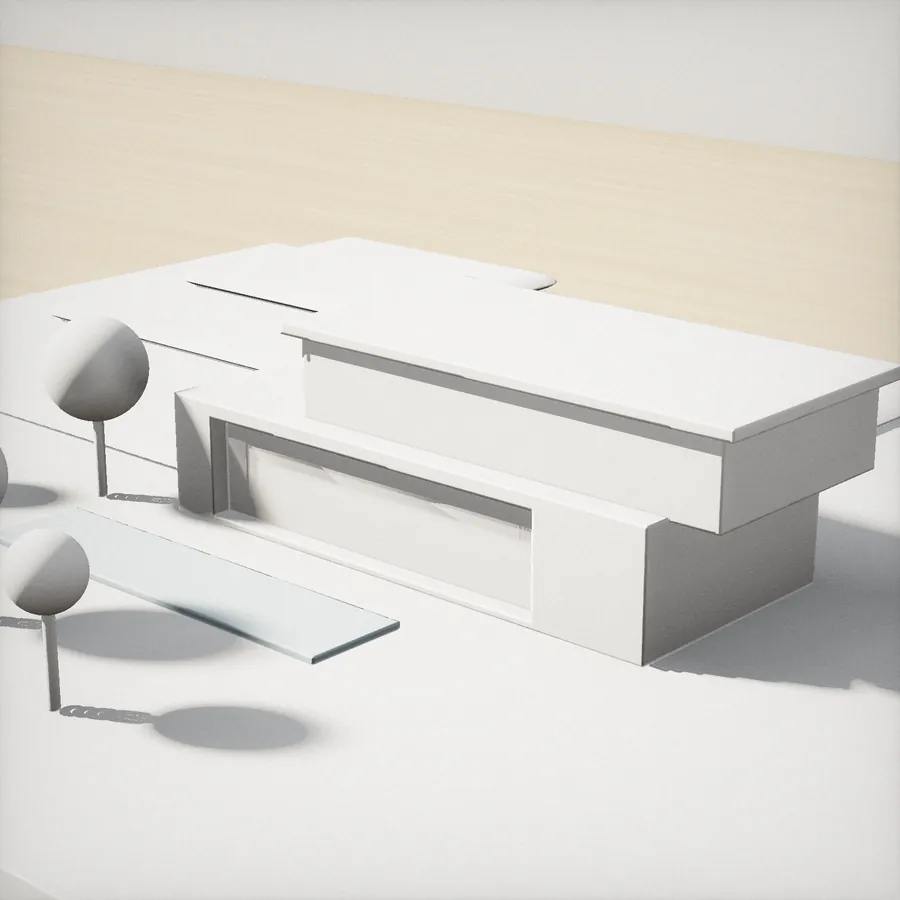
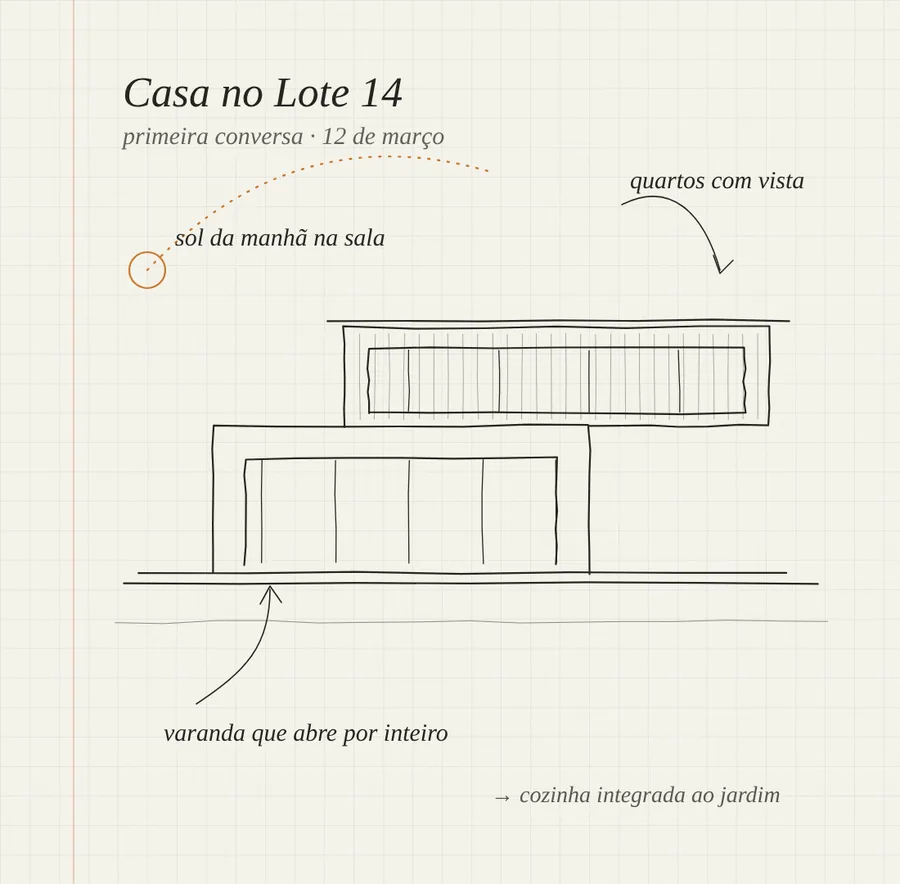
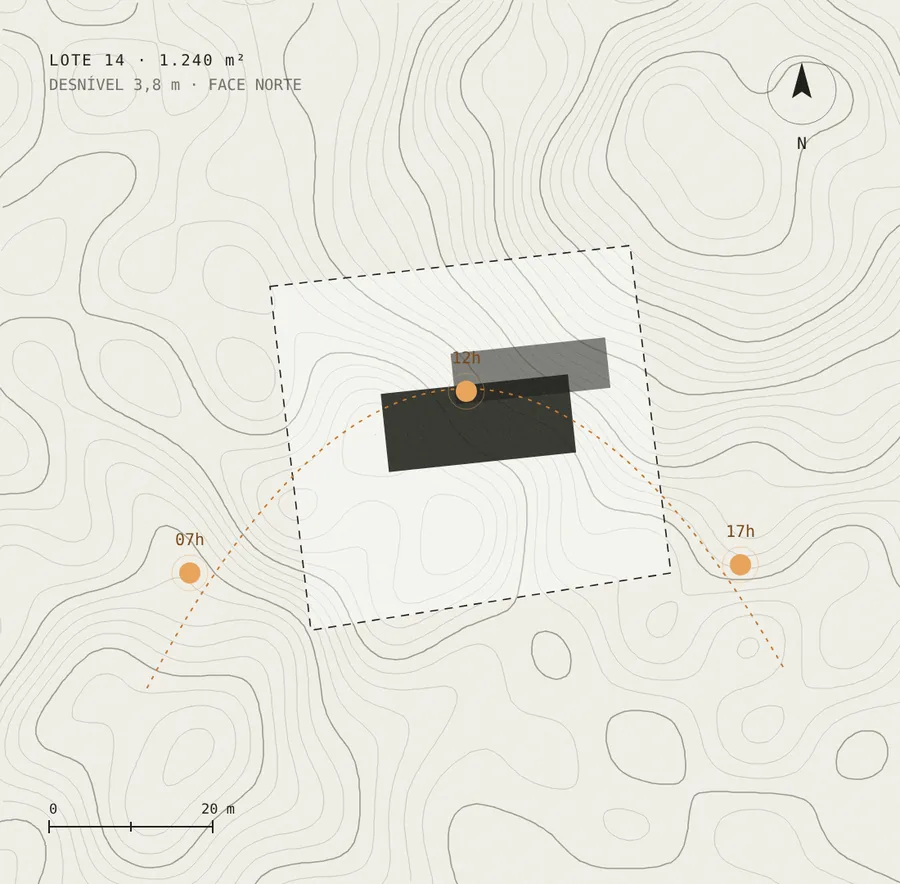
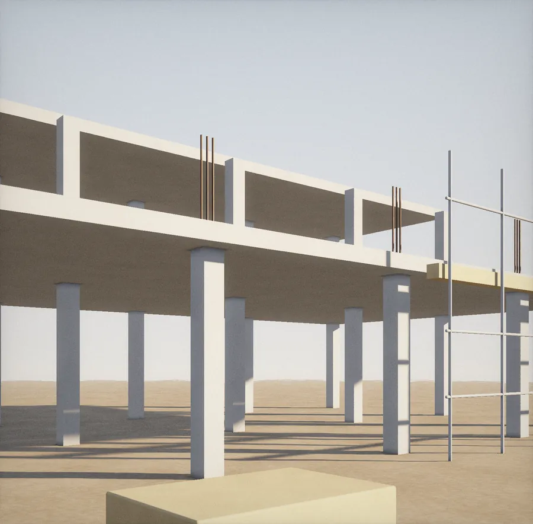

Antes da primeira linha, observamos o terreno: por onde o sol nasce, onde o vento passa e o que a paisagem pede. A casa nasce dessa leitura. Por isso, cada ambiente recebe a luz certa, na hora certa, e a construção parece estar ali desde sempre.
A diferença
Muitos projetos entregam uma planta. A Forma entrega um percurso.
Mapeamos luz, ventilação e vistas antes de desenhar. Você acompanha cada decisão, do terreno à entrega das chaves.
Sala · 10:24Luz leste
A luz, não só a janela
Cada abertura é posicionada pelo caminho do sol, não pela fachada.

FachadaBrise 45°
Sombra que trabalha
Brises verticais filtram o sol da tarde e reduzem o calor sem fechar a vista.

MateriaisAmostras
Materiais que envelhecem bem
Madeira, pedra e cerâmica escolhidas para ganhar caráter com o tempo.

Maquete1:100
Ver antes de construir
Maquetes físicas e digitais para decidir com segurança, ambiente por ambiente.
Entrega17:35
Pronta para ser vivida
Acompanhamos a obra até a última luminária acesa.
01 / 05
Como funciona
Um terreno. Um projeto inteiro.



12 mar1ª conversa
01 · Conversa
Começamos ouvindo: sua rotina, seus hábitos e o jeito como você quer morar.
Primeira reunião sem custo, presencial ou online.
02 · Terreno
Visitamos o terreno para estudar sol, vento, vistas e topografia.
Relatório de insolação incluído.
03 · Projeto
Desenvolvemos o projeto com maquetes e imagens para cada decisão.
Revisões ilimitadas no estudo preliminar.
04 · Obra
Acompanhamos a obra de perto, com visitas e relatórios semanais.
Você recebe fotos de cada etapa.
05 · Entrega
Entregamos a casa pronta, com manual de uso e garantia do projeto.